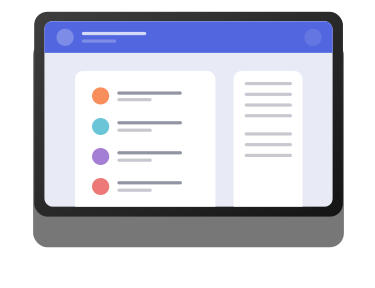
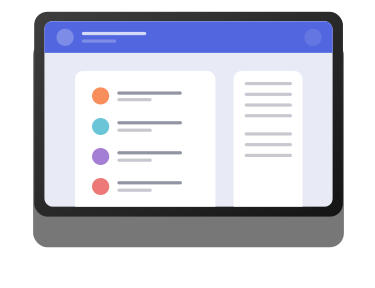

Tek tıklamayla yer imi
Yer imlerinizi istediğiniz gibi düzenleyin. Basit, sürükle ve bırak arayüzümüz, favori sitelerinizi nasıl yöneteceğiniz konusunda size tam kontrol sağlar.
 

Favori web sitelerinizi düzenlemek için temiz ve basit bir arayüz. Yeni bir tarayıcı sekmesi açın ve sitelerinizin anında yüklendiğini görün. Ücretsiz deneyin.
Amacımız, favori web sitelerinize hızlı ve kolay bir şekilde erişmenizi sağlamaktır. Yer imleriniz cihazlarınız arasında senkronize olur, böylece onlara hareket halindeyken de erişebilirsiniz.
Yer imlerinizi istediğiniz gibi düzenleyin. Basit, sürükle ve bırak arayüzümüz, favori sitelerinizi nasıl yöneteceğiniz konusunda size tam kontrol sağlar.

Güçlü arama özelliğimiz, kayıtlı siteleri hiç vakit kaybetmeden bulmanıza yardımcı olacaktır. Tüm yer imlerinizi taramanıza gerek yok.
Yer imlerinizi ve koleksiyonlarınızı başkalarıyla kolayca paylaşın. Tek bir düğmeye tıklayarak gönderebileceğiniz paylaşılabilir bir bağlantı oluşturun.
Sırada daha fazla tarayıcı var. Öncelik vermemizi istediğiniz bir favoriniz varsa lütfen bize bildirin.
Geçerli en düşük sürüm 62

Geçerli en düşük sürüm 55
Geçerli en düşük sürüm 46
İşte SSS'lerimizden bazıları. Yanıtlanmasını istediğiniz başka sorularınız varsa lütfen bize e-posta göndermekten çekinmeyin.